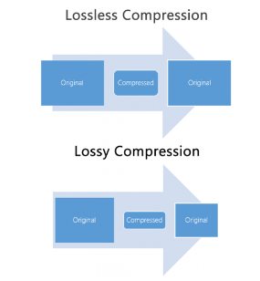

Compressietechnieken zijn methoden om digitale gegevens kleiner te maken, zodat ze minder opslagruimte innemen of sneller kunnen worden verzonden via bijvoorbeeld het internet. Dit is vergelijkbaar met het proberen om een grote hoeveelheid kleren in een kleinere koffer te passen door ze efficiënt op te vouwen. Er zijn twee hoofdtypen compressie: lossless en lossy. Lossless Compressie: Deze techniek is als het vouwen van je kleren zodat je ze later precies zo kunt uitvouwen als ze waren. Met lossless compressie wordt de bestandsgrootte verkleind zonder enig verlies van gegevens of kwaliteit. Het werkt goed voor bestanden waarvan je absoluut zeker wilt zijn dat ze onveranderd blijven, zoals tekstbestanden of spreadsheets. Een veelgebruikte methode voor lossless compressie is ZIP-compressie. Hiermee worden herhalingen in gegevens geïdentificeerd en verwijderd, en worden patronen vervangen door kortere codes. Wanneer je het bestand weer uitpakt, krijg je exact het origineel terug. Lossy Compressie: Stel je voor dat je een foto hebt en je wilt die kleiner maken om gemakkelijker te delen. Lossy compressie is als het maken van een kopie van die foto, maar de kopie is een beetje minder scherp dan het origineel. Het maakt de bestandsgrootte veel kleiner, maar je verliest wat kwaliteit. Dit wordt vaak gebruikt voor afbeeldingen, audio en video, omdat de meeste mensen het subtiele kwaliteitsverlies niet eens opmerken.  Voorbeeld van lossy compressie is de JPEG-compressie voor afbeeldingen. Hierbij worden details verwijderd die moeilijk voor het menselijk oog waarneembaar zijn, waardoor de bestanden kleiner worden. Compressie werkt door herhalingen of patronen in gegevens te identificeren en deze efficiënter weer te geven. Bij lossless compressie kun je de oorspronkelijke gegevens exact herstellen, terwijl lossy compressie enigszins inboet op de kwaliteit om bestandsgrootte te besparen. Het type compressie dat je kiest, hangt af van het soort gegevens en het doel ervan. Het kan helpen om ruimte te besparen op je harde schijf, bandbreedte te verminderen bij het verzenden van gegevens via internet of gegevensopslag op mobiele apparaten te optimaliseren.